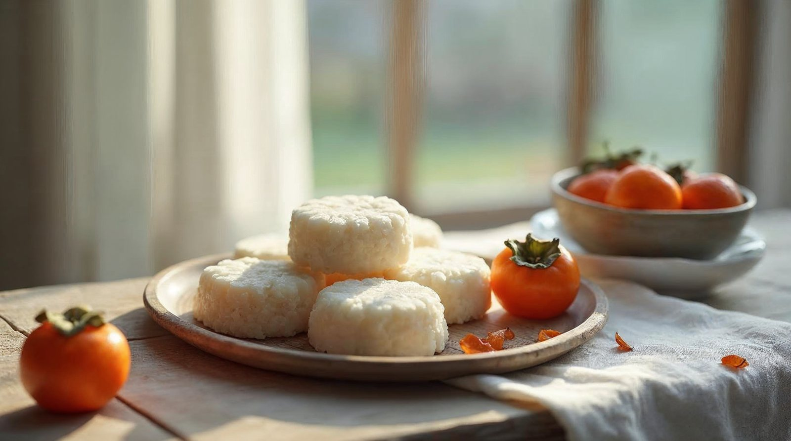
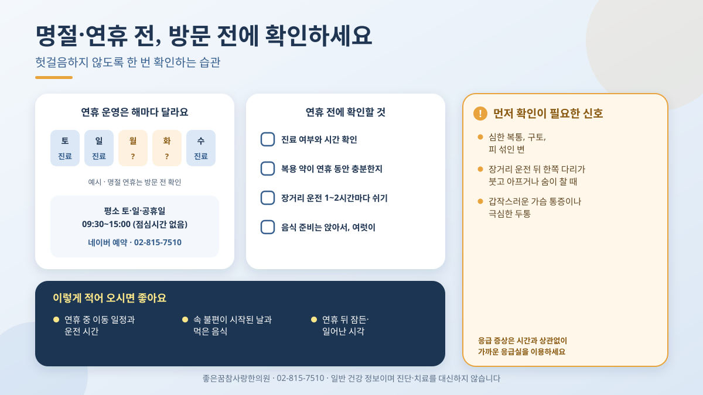

이종호 한의사 감수좋은꿈참사랑한의원 대표원장 (한의사 면허번호 19769)발행 2026-11-23 · 수정 2026-11-26
이 글의 차례
- 왜 연휴 전후에 몸이 불편해질까요
- 자주 하는 오해
- 예를 들면 이런 경우입니다
- 연휴 뒤 피로인지, 다른 데서 온 불편인지 어떻게 볼까요?
- 먼저 이렇게 여쭙니다
- 스스로 점검해 보세요
- 오시는 길과 진료 시간
- 방문 전에 먼저 해 볼 수 있는 것
- 한의원에서 함께 살필 수 있는 경우
- 언제 지켜보고, 언제 바로 진료받을까요
- 이렇게 기록해 오시면 상담이 쉬워집니다
- 왜 연휴 뒤에는 잠이 쉽게 돌아오지 않을까요
- 명절에 몸을 많이 쓰는 분이 스스로 볼 점
- 연휴 동안 몸을 덜 지치게 하는 요령
- 연휴 동안 놓치기 쉬운 약, 이렇게 챙기세요
- 연휴 뒤 첫 주 식사는 이렇게 해 보세요
- 연휴 앞뒤 예약은 언제 잡을까요?
- 연휴 동안 장을 볼 때도
- 연휴에도 지키면 좋은 세 가지
- 연휴 동안 짧게 적어 두면 좋은 것
- 아이와 어르신을 돌보느라 바쁜 분께
- 연휴 마지막 날은 이렇게 정리해 보세요
- 연휴 뒤 첫 방문 때는 이렇게 말씀해 주세요
- 이런 증상은 먼저 확인이 필요합니다
- 함께 읽으면 좋은 글
명절과 연휴에는 평소와 다른 시간표로 운영하는 곳이 많습니다. 좋은꿈참사랑한의원은 평소 토·일·공휴일에도 09:30~15:00에 진료하지만 명절 연휴 진료 여부와 시간은 해마다 달라질 수 있어, 헛걸음하지 않도록 방문 전에 전화(02-815-7510)로 한 번 확인해 주세요.
연휴 전에는 복용 중인 약과 이동 일정을, 연휴 뒤에는 흐트러진 잠과 식사를 정리해 오시면 상담이 한결 쉬워집니다.
왜 연휴 전후에 몸이 불편해질까요
- 기름진 음식과 과식이 이어져 속이 더부룩해지기 쉽습니다.
- 장거리 운전과 이동으로 허리와 다리가 오래 굳습니다.
- 음식 준비로 오래 서 있거나 쪼그려 앉아 일하는 시간이 깁니다.
- 늦게 자고 늦게 일어나는 날이 이어져 연휴 뒤 리듬이 흐트러집니다.

자주 하는 오해
- 공휴일에도 진료하니 명절 당일도 평소처럼 문을 열 것이라 여기기 쉽지만, 명절 연휴 진료 일정은 해마다 달라질 수 있어 방문 전 전화 확인이 필요합니다.
- 연휴 뒤 더부룩함과 피로는 며칠 지나면 저절로 풀린다고만 생각하기 쉽지만, 1~2주가 지나도 잠과 소화가 돌아오지 않는다면 그때는 상담해 보시는 편이 좋습니다.
- 연휴에는 먹던 약을 잠시 쉬어도 된다고 여기기 쉽지만, 복용 중인 약은 처방한 의사나 한의사와 상의 없이 끊지 않는 것이 원칙입니다.
- 연휴 직전이면 금방 진료받을 수 있을 거라 생각하기 쉽지만, 연휴 앞뒤로는 방문하는 분이 몰릴 수 있어 예약을 먼저 잡아 두는 편이 편합니다.
예를 들면 이런 경우입니다
- 명절 음식 준비를 도맡는 분이라면, 연휴 전에 허리와 무릎 상태를 미리 상담해 두고 앉아서 할 일과 서서 할 일을 나누는 방법을 함께 이야기해 볼 수 있습니다.
- 지방까지 왕복 운전을 하는 직장인이라면, 연휴 뒤 첫 출근 전에 들를 수 있는 날이 있는지 전화로 먼저 확인해 두면 일정에 덜 쫓깁니다.
- 연휴 동안 손주를 돌보는 어르신이라면, 복용 중인 약이 연휴 끝까지 넉넉한지 먼저 세어 보고, 연휴 뒤 피로와 허리 불편이 이어지는지 지켜보세요.
연휴 뒤 피로인지, 다른 데서 온 불편인지 어떻게 볼까요?
연휴 뒤 몸이 무거운 것은 흔한 일입니다. 다만 같은 피로라도 흐름을 보면 짐작할 단서가 조금씩 다릅니다.
- 연휴 동안 늦게 자고 많이 먹었고, 평소 생활로 돌아온 뒤 며칠 사이 조금씩 가벼워진다면 생활 리듬이 흔들린 쪽입니다.
- 연휴 전부터 있던 허리나 무릎 불편이 음식 준비나 운전 뒤 더 커졌다면, 원래 불편에 무리가 겹친 경우가 많습니다.
- 연휴가 끝났는데도 입맛이 계속 없고 잠이 돌아오지 않는다면, 연휴만의 문제로 넘기지 말고 상담해 보시기를 권합니다.
이렇게 연휴 전과 연휴 뒤를 나누어 적어 오시면, 진료실에서 무엇부터 살필지 정하기가 훨씬 쉬워집니다.
먼저 이렇게 여쭙니다
- 연휴 기간 이동 일정과 거리는 어느 정도인가요?
- 복용 중인 약이 연휴 중에 떨어지지는 않나요?
- 음식 준비로 오래 서 있거나 쪼그려 앉는 일이 있나요?
- 연휴 뒤 바로 출근이나 등교를 하시나요?
스스로 점검해 보세요
연휴를 앞두고 방문 전에 아래 항목을 확인해 보세요.
- 연휴 기간 진료 여부와 시간을 전화(02-815-7510)로 확인했다
- 복용 중인 약(양약·한약·영양제)이 연휴 끝까지 충분한지 세어 보았다
- 연휴 중 이동 일정과 운전 시간을 대략 적어 두었다
- 연휴 앞뒤로 방문하고 싶다면 네이버 예약이나 전화로 시간을 먼저 잡았다
- 연휴 전부터 불편했던 곳과 연휴 중 새로 생긴 불편을 나누어 적었다
체크하지 못한 항목이 있다면 연휴 시작 사흘 전쯤 한 번 더 살펴보세요. 특히 약은 연휴 첫날에야 모자란 것을 알게 되는 경우가 많아, 남은 양을 미리 세어 보는 것만으로도 연휴 동안의 걱정을 크게 덜 수 있습니다. 연휴 전에 방문 일정을 잡았다면 그날 여쭤볼 것도 메모 한 장에 함께 적어 두세요.
오시는 길과 진료 시간
- 상도역 3번 출구로 나와 약 200m 직진한 뒤, 오거리에서 우회전해 약 200m 오시면 됩니다.
- 노량진역 쪽에서는 3번 출구에서 마을버스 동작01을 타고 신동아리버파크에서 내리시면 됩니다.
- 평소 진료 시간은 평일 09:30~20:00(점심 13:00~14:00), 토·일·공휴일 09:30~15:00입니다. 명절 연휴 진료 일정과 주차 가능 여부는 방문 전 전화로 확인해 주세요.
방문 전에 먼저 해 볼 수 있는 것
- 연휴 진료 여부와 시간은 전화(02-815-7510)로 확인하기
- 복용 중인 약이 연휴 동안 충분한지 미리 확인하기
- 장거리 운전 때 1~2시간마다 쉬며 걷기
- 음식 준비는 의자에 앉아서 하고 여럿이 나눠서 하기
한의원에서 함께 살필 수 있는 경우
- 연휴 동안 음식이 늘어 속이 더부룩할 때 식사 패턴을 함께 살핍니다.
- 장거리 이동으로 허리와 다리가 뻐근할 때 앉은 자세와 쉬는 방법을 함께 묻습니다.
- 연휴 뒤 생활 리듬이 흐트러졌다고 느낄 때 잠과 식사 시간을 함께 정리합니다.
좋은꿈참사랑한의원에서는 연휴 전후 생활 변화와 불편한 곳을 함께 듣고 진찰한 뒤, 침이나 추나, 한약 상담 등이 도움이 되는지 함께 봅니다. 연휴 중 복용 일정이 겹친다면 미리 말씀해 주시면 함께 조정합니다.
첫 방문이라면 모든 분께 그렇듯 맥부터 짚고, 맥을 짚으면서 연휴 동안의 이동, 식사, 잠을 여쭙습니다. 연휴 뒤 체중이나 몸 구성 변화가 궁금한 경우처럼 필요하다고 판단되면 인바디 770 등 장비로 확인합니다.
적어 오신 연휴 일정과 식사 기록을 함께 보고, 오늘 받을 치료와 그 이유, 연휴 뒤 일주일 동안 생활 리듬을 되돌리는 방법을 설명해 드립니다.
언제 지켜보고, 언제 바로 진료받을까요
- 과식 뒤 더부룩함이나 가벼운 피로라면 식사량을 줄이고 잠자는 시간을 평소대로 되돌리며 3~4일 지켜보세요.
- 1~2주가 지나도 잠, 소화, 허리 불편이 평소대로 돌아오지 않으면 상담을 받아 보세요.
이렇게 기록해 오시면 상담이 쉬워집니다
- 연휴 중 이동 일정과 운전 시간
- 속 불편이 시작된 날과 먹은 음식
- 연휴 뒤 잠든 시간과 일어난 시간
- 복용 중인 약 이름과 남은 양
왜 연휴 뒤에는 잠이 쉽게 돌아오지 않을까요
연휴 동안 며칠씩 늦게 자고 늦게 일어나면 몸의 시계가 그만큼 뒤로 밀립니다. 출근 전날 밤 일찍 누워도 잠이 오지 않는 까닭이 여기에 있습니다.
늦은 밤까지 먹은 음식과 술, 낮잠도 밤잠을 얕게 만들 수 있습니다. 그래서 연휴 마지막 이틀쯤은 일어나는 시각을 평소대로 당겨 두면, 첫 출근 날 아침이 훨씬 덜 힘듭니다.
명절에 몸을 많이 쓰는 분이 스스로 볼 점
- 음식 준비를 하루 세 시간 넘게 서서 하셨나요?
- 바닥에 쪼그려 앉아 일한 시간이 길었나요?
- 왕복 운전이 다섯 시간을 넘었나요?
- 손주나 아이를 오래 안고 계셨나요?
- 연휴 동안 평소보다 잠이 두 시간 넘게 줄었나요?
해당하는 항목이 많을수록 연휴 뒤 허리, 무릎, 손목이 뻐근하기 쉽습니다. 어느 항목이 해당했는지 적어 오시면 어떤 동작이 부담이 됐는지 함께 살펴보기 쉽습니다.
연휴 동안 몸을 덜 지치게 하는 요령
- 음식 준비는 바닥에 쪼그려 앉기보다 식탁 높이에서 하고, 30분쯤마다 일어나 허리를 펴 주세요.
- 무거운 냄비나 상은 혼자 들지 말고 두 사람이 함께 옮깁니다.
- 장거리 운전은 휴게소마다 내려 몇 분이라도 걷고, 운전자를 번갈아 바꾸면 덜 지칩니다.
- 명절 상차림에서는 나물과 채소부터 먹고, 기름진 전과 고기는 그다음에 드시면 과식을 덜 수 있습니다.
- 늦게까지 이야기꽃이 피더라도 잠자리에 드는 시각을 평소보다 한 시간 이상 늦추지 않도록 해 보세요.
연휴 동안 놓치기 쉬운 약, 이렇게 챙기세요
본가나 여행지로 이동하는 날은 약을 집에 두고 오는 일이 많습니다. 출발 전에 연휴 일수만큼 약을 따로 챙겨 가방 한곳에 모아 두세요.
식사 시간이 평소와 달라지면 복용 시각도 놓치기 쉽습니다. 휴대폰 알림을 맞추거나, 가족에게 한 번 챙겨 달라고 부탁해 두는 것도 방법입니다. 한약을 드시는 중이라면 연휴 동안 보관할 곳이 있는지도 미리 확인해 두세요.
연휴 뒤 첫 주 식사는 이렇게 해 보세요
- 남은 명절 음식은 한 끼에 몰아 먹지 말고 조금씩 나누어 먹습니다.
- 기름진 음식이 이어졌다면 국은 맑게, 반찬은 나물과 채소 위주로 꾸려 봅니다.
- 저녁은 잠들기 세 시간 전까지 마치는 것을 목표로 합니다.
- 군것질과 단 음료는 눈에 띄지 않는 곳에 두면 손이 덜 갑니다.
연휴 앞뒤 예약은 언제 잡을까요?
연휴 바로 앞뒤에는 방문하는 분이 몰릴 수 있어 원하는 시간에 맞추기 어려울 때가 있습니다. 연휴 일정이 정해지면 그때 바로 네이버 예약이나 전화로 시간을 잡아 두시면 편합니다.
연휴 동안 진료하는 날이 있는지, 몇 시까지인지도 같은 전화로 함께 여쭤 보세요.
연휴 동안 장을 볼 때도
연휴 전 장을 볼 때 무거운 짐을 한 번에 들지 말고 여러 번 나누어 옮기세요. 카트나 바퀴 달린 장바구니를 쓰면 허리와 손목 부담을 덜 수 있습니다.
연휴에도 지키면 좋은 세 가지
- 일어나는 시각: 평소보다 한 시간 이상 늦추지 않습니다.
- 끼니: 아침을 거르지 않고, 저녁은 늦게 많이 먹지 않습니다.
- 움직임: 하루 한 번은 밖에 나가 20분 이상 걷습니다.
세 가지 모두 지키기 어렵다면 하나만 골라 보세요. 그 하나만 지켜도 연휴 뒤 생활로 돌아오는 길이 훨씬 짧아집니다. 연휴 뒤 진료 때 어느 것을 지켰는지 말씀해 주시면 함께 이어서 살펴봅니다.
연휴 동안 짧게 적어 두면 좋은 것
연휴가 끝나면 며칠 동안 무엇을 했는지 금세 흐려집니다. 휴대폰 메모에 날마다 한 줄씩만 남겨 두세요.
- 그날 가장 많이 한 일(운전 몇 시간, 음식 준비 몇 시간)
- 잠든 시각과 일어난 시각
- 불편했던 곳이 있다면 어디였는지
이 기록이 있으면 연휴 뒤 진료에서 어떤 날 무리가 컸는지 함께 짚어 보기 쉽습니다.
아이와 어르신을 돌보느라 바쁜 분께
명절에는 아이를 챙기고 어르신 식사를 돌보느라 정작 자신의 끼니와 잠을 놓치기 쉽습니다. 하루 한 번은 앉아서 따뜻한 식사를 하고, 가족에게 일을 조금씩 나눠 달라고 말해 보세요.
연휴 마지막 날은 이렇게 정리해 보세요
연휴 마지막 날은 다음 날 출근이나 등교를 위한 준비 시간으로 써 보세요. 평소 일어나는 시각에 맞춰 일어나고, 저녁은 가볍게 드신 뒤 일찍 잠자리에 드는 것만으로도 첫 출근길이 한결 가볍습니다.
복용 중인 약이 남아 있는지 다시 세어 보고, 연휴 동안 놓친 약이 있었다면 메모해 두세요. 한의원에 오실 계획이라면 연휴 동안 불편했던 점을 이날 메모 한 장에 정리해 두시면 좋습니다.
연휴 뒤 첫 방문 때는 이렇게 말씀해 주세요
- 연휴 전부터 있던 불편과 연휴 중에 새로 생긴 불편을 나누어 말씀해 주세요.
- 연휴 동안 가장 많이 한 일(운전, 음식 준비, 아이 돌봄, 오래 앉아 있기)을 알려 주세요.
- 잠든 시각이 평소보다 얼마나 늦었는지, 식사는 몇 끼였는지 대략 말씀해 주세요.
- 연휴 동안 놓친 약이 있었다면 그것도 함께 알려 주세요.
연휴 동안 가족을 챙기느라 정작 본인은 쉬지 못하는 분이 많습니다. 몸의 피로만큼 마음의 피로도 쌓이니, 진료실에서는 그런 이야기도 편하게 꺼내셔도 괜찮습니다.
이런 증상은 먼저 확인이 필요합니다
- 연휴 중 심한 복통, 구토, 피 섞인 변이 있는 경우
- 장거리 운전 뒤 한쪽 다리가 붓고 아프거나 숨이 찬 경우
이런 신호가 있으면 한의원보다 가까운 병원이나 응급실을 먼저 찾으세요.
함께 읽으면 좋은 글

여쭙는 것
- 연휴 기간 이동 일정과 거리는 어느 정도인가요?
- 복용 중인 약이 연휴 중에 떨어지지는 않나요?
- 음식 준비로 오래 서 있거나 쪼그려 앉는 일이 있나요?
한의원에서 함께 살필 것
- 연휴 동안 음식이 늘어 속이 더부룩할 때 식사 패턴을 함께 살핍니다.
- 장거리 이동으로 허리와 다리가 뻐근할 때 앉은 자세와 쉬는 방법을 함께 묻습니다.
- 연휴 뒤 생활 리듬이 흐트러졌다고 느낄 때 잠과 식사 시간을 함께 정리합니다.
먼저 확인이 필요한 신호
- 연휴 중 심한 복통, 구토, 피 섞인 변이 있는 경우
- 장거리 운전 뒤 한쪽 다리가 붓고 아프거나 숨이 찬 경우
한눈에 보는 표
| 구분 | 핵심 |
|---|---|
| 여쭙는 것 | 연휴 기간 이동 일정과 거리는 어느 정도인가요? 복용 중인 약이 연휴 중에 떨어지지는 않나요? |
| 한의원에서 함께 살필 것 | 연휴 동안 음식이 늘어 속이 더부룩할 때 식사 패턴을 함께 살핍니다. 장거리 이동으로 허리와 다리가 뻐근할 때 앉은 자세와 쉬는 방법을 함께 묻습니다. |
| 먼저 확인이 필요한 신호 | 연휴 중 심한 복통, 구토, 피 섞인 변이 있는 경우 장거리 운전 뒤 한쪽 다리가 붓고 아프거나 숨이 찬 경우 |
자주 묻는 질문
연휴 마지막 날에도 진료하나요?
해마다 다를 수 있어 방문 전에 전화(02-815-7510)로 확인해 주세요.
연휴 직전에 방문하면 붐비나요?
기다리는 시간이 길어질 수 있으니 예약을 권합니다.
약이 연휴 중 끝나면 어떻게 하나요?
한약이라면 미리 한의원에 알려 일정을 상의해 두시고, 병원에서 처방받은 약은 연휴 전에 처방받은 곳에서 미리 챙겨 두세요.
연휴 동안 과식했는데 바로 방문해야 하나요?
가벼운 더부룩함은 며칠 식사량을 줄이며 지켜보시고, 1~2주가 지나도 소화와 잠이 돌아오지 않으면 상담해 보세요.
연휴 전에 미리 진료를 받아 두는 게 좋을까요?
연휴 전부터 불편했던 곳이 있다면 연휴가 시작되기 며칠 전에 상담해 두시면, 연휴 동안 지킬 요령을 함께 정할 수 있습니다.
좋은꿈참사랑한의원은 재진 때 지난번 이야기부터 이어서 여쭙니다. 진료시간과 예약은 오시는 길에서 확인하세요.
어디서 상담받을 수 있나요?
좋은꿈참사랑한의원은 서울 동작구 만양로2길 2 신성빌딩 3층·5층(서울 동작구 상도동, 7호선 상도역 3번 출구 근처)에 있습니다. 한의사 3명(이종호 대표원장, 조영기 수석진료원장, 정원영 진료원장)이 진료합니다. 진료시간은 평일 09:30~20:00(점심 13:00~14:00), 토·일·공휴일 09:30~15:00이며, 방문 전 전화로 확인을 권합니다. 예약은 네이버 예약, 카카오톡 상담, 전화 02-815-7510로 받습니다.
이 글은 일반적인 건강 정보이며 개인의 진단이나 치료를 대신하지 않습니다. 증상이 있거나 복용 중인 약이 있다면 진료를 통해 확인하세요. 치료 효과는 개인마다 다를 수 있습니다.
작성 기준: 일반적으로 알려져 있는 건강 정보를 참고해 정리했습니다(대표원장 감수). 증상 기록은 1~2주 동안 하루 1회, 비슷한 시간에 적어 오시면 지난 상태와 비교하기 쉽습니다.